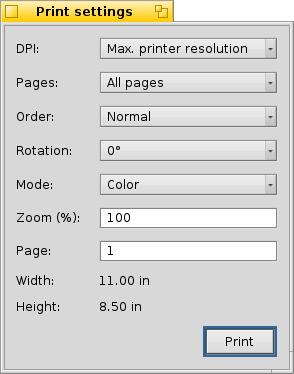

BePDF facilita l'uscita dal documento allo stampante tranne l'uso di una interface grafica intuitiva.
I file PDF possono stamparsi al scegliere 'Stampa' dal menù 'File' o pulsando l'icona Stampa dalla barra degli strumenti. Il dialogo impostazioni della stampa consiste di tre sezioni.
La sezione generale modifica la disposizione d'uscita generale del documento PDF.
DPI
Sceglie la resoluzione in DPI (punti per pollice, dots per inch all'inglese) che si usino per fare la rasterizzazione di ogni pagina PDF. Per la miglore qualità questo dovrebbe concordare la resoluzione dello stampante, que sia specificata dall'utente nelle dialoghe impostazione di pagina o del lavoro nel suo driver dello stampante.
Note prego che stampare a resoluzioni grandi può consumire grandi quantità di memoria.
Pagina
Quando si seleziona 'Tutte le pagine' si stamperanno tutte le pagine del documento in sequenza. Quando selezionata 'Pagine dispari' e 'Pagine pari' si consente di stampare soltanto le pagine numerate dispari o pari. Questo viene utile quando si genera l'uscita allo stile di libro, su due lati.
Ordine
Al selezionare l'ordine 'Normale' o 'Inverso' s'instruisce BePDF di stampare le pagine in sequenza ascendente (1, 2, 3, . . .) oppure inversamente (5, 4, 3, . . . ) rispettivamente.
Modalità
'A colori' o 'In scala di grigi' insegna BePDF a scegliere tra le modalità a colori o a scala di grigi (bianco e nero). Uno stampante a colore si requisita per stampare a colori.
Rotazione
Al selezionare un angolo di rotazione si sceglie l'orientazione del documento nella pagina stampata.
an angle of rotation sets the orientation of the document on the printed page. Zero gradi è come il documento viene sullo schermo. Il documento può essere orientato in incrementi di 90 gradi, incrementando l'angolo in senzo antiorario.
Zoom
Zoom consente l'utente di scegliere la scala di zoom del documento a stampare. Una selezione zoom di 100% è la dimensione dal documento attuale.
Dimensione della pagina
La sezione Dimensione della pagina del dialogo stampa permette l'utente di richiamare le dimensioni della pagina per il numero di pagina inserito nel campo d'ingresso. Questa funzione può usarsi per iautare nella scala di un documento ad adattarsi a una certo formato di carta tranne la stampa.
Dopo selezionare le impostazioni desiderate, quando si pulsa il bottone 'Stampa' nel dialogo si chiede al daemon di stampa BeOS di cominciare. Se il driver di stampa installato si seleziona per consentire l'utente di selezionare opzioni di stampa, degli dialoghi di stampa adizionali si visualizzerano. Se i valori in questi dialoghi sono selezionati contariamente agli scelti nel dialogo BePDF precedente, il driver dello stampante ignorerà i valori di BePDF.